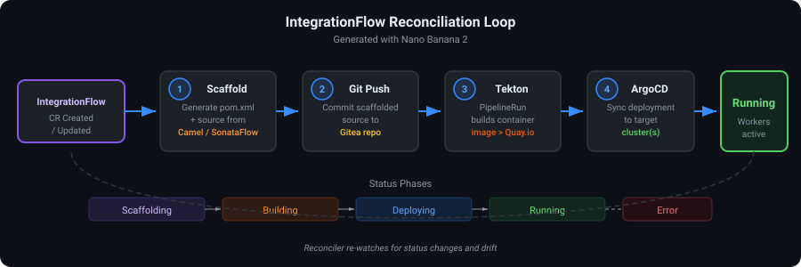
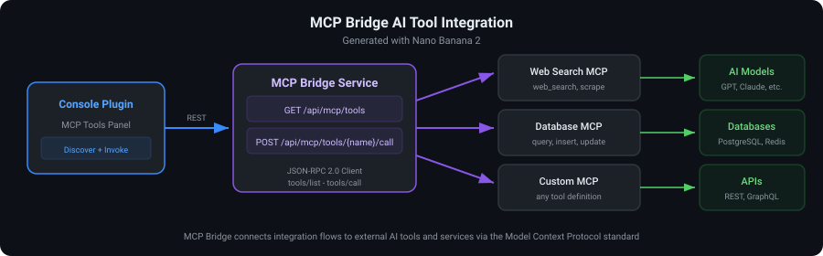

High-Level Architecture
The platform is composed of four primary layers that work together to deliver end-to-end integration workflow lifecycle management on OpenShift.

Operator
Quarkus-based Kubernetes operator that watches IntegrationFlow CRs, scaffolds worker projects, pushes to Git, triggers Tekton builds, and tracks ArgoCD applications.
Console Plugin
Dynamic OpenShift Console plugin with Integration Flows list view, embedded Kaoto designer, and live telemetry overlay on the canvas.
Workers
Runtime pods executing Camel routes or SonataFlow definitions. Scaled by HPA based on CPU and memory metrics.
GitOps Layer
Gitea stores scaffolded source; Tekton integration-flow-build pipeline builds container images; ArgoCD syncs deployments to target clusters.
CRD Model
The IntegrationFlow custom resource (platform.io/v1alpha1, short name
iflow) is namespaced and drives the full lifecycle.
Spec Fields
| Field | Type | Description |
|---|---|---|
deploymentMode |
enum | GITOPS (default) or EPHEMERAL for Quick Try without Git |
ephemeral.ttlSeconds |
integer | TTL for ephemeral runtime (default from Helm ephemeral.defaultTtlSeconds) |
gitRepository |
string | Git remote URL (required for GITOPS, ignored for EPHEMERAL) |
branch |
string | Git branch to push and build (default: main) |
integrationType |
enum | CAMEL_ROUTE, CAMEL_KAMELET, CAMEL_PIPE, CAMEL_TEST, or SONATAFLOW |
engine |
enum | CAMEL or SONATAFLOW |
targeting.strategy |
string | explicit (named clusters), all, or selector (label match) |
targeting.clusters |
[]string | Target clusters when strategy is explicit |
targeting.clusterSelector.matchLabels |
map | Label selector for dynamic cluster matching (when strategy is selector) |
kaotoDesign |
string | Raw Kaoto design — YAML for Camel routes, JSON/YAML for SonataFlow |
Status Fields
| Field | Type | Description |
|---|---|---|
phase |
enum | Scaffolding, Building, Deploying, Running, Expired, or Error |
deploymentMode |
enum | Active mode: GITOPS or EPHEMERAL |
ephemeralExpiresAt |
string (ISO-8601) | Expiry timestamp when in ephemeral mode |
ephemeralWorkerRef |
string | Reference to deployed ephemeral resource (Deployment, Job, or CR name) |
gitCommitHash |
string | SHA of the last successful Git push (GitOps mode only) |
argoApplicationName |
string | ArgoCD Application name (e.g. iflow-<name>) |
lastScaffoldedHash |
string | SHA-256 of the last scaffolded kaotoDesign — prevents redundant builds when unchanged |
message |
string | Human-readable status or error message |
Reconciliation Loop
When an IntegrationFlow is created or updated, the reconciler branches on
spec.deploymentMode:
GitOps Mode (default)
When deploymentMode is GITOPS (or unset), the reconciler executes the following
steps in order:

-
Scaffold — The
ScaffoldingServicegenerates a worker project from the selected engine (CAMELorSONATAFLOW) and the Kaoto design payload. Status phase:Scaffolding. -
Git Push — The
GitOpsServicecommits and pushes scaffolded source to the configured Git repository and branch. On failure, phase is set toError. -
Tekton — A
PipelineRunis created referencing the cluster Pipelineintegration-flow-build, passing git URL, branch, commit SHA, and flow name as parameters. Status phase:Building. -
ArgoCD — The ArgoCD Application name (
iflow-<flowName>) is recorded in status for tracking. ArgoCD syncs the built image to the target cluster(s). Status phase:Deploying→Running. - Deploy — Worker pods start executing the integration flow. HPA monitors load and scales replicas within configured bounds.
Ephemeral Mode (Quick Try)
When deploymentMode is EPHEMERAL, Git push, Tekton, and ArgoCD are skipped.
The reconciler scaffolds in memory and deploys runtime resources directly via
EphemeralRuntimeService:
- Scaffold — Generate worker artifacts from
kaotoDesign(no Git commit). - Deploy — Type-specific deployer creates ConfigMap + Deployment (Camel Route), Kamelet/Pipe CRs (Camel K), Job (Camel Test), or SonataFlow CR in
kogito-bpm. - TTL — Set
status.ephemeralExpiresAt; on expiry, phase becomesExpiredand deployments scale to zero. - Cleanup — Finalizer
platform.io/ephemeral-cleanupremoves labeled resources on delete. - Promote —
POST /api/flows/{name}/promote-to-gitopsswitches to GitOps and triggers the standard pipeline.
Telemetry Pipeline
Runtime observability flows from OpenTelemetry collectors through the operator API to the console plugin, enabling real-time visual feedback on the Kaoto canvas.

- OpenTelemetry — Worker pods emit traces and metrics to the OTel collector (
otel-collector:4317by default). - Operator API — The operator exposes
/api/telemetry/stream/{flowId}as a Server-Sent Events (SSE) stream and/api/telemetry/snapshot/{flowId}for point-in-time node status. - Console Canvas — The
TelemetryOverlaycomponent subscribes to the SSE stream and colors Kaoto nodes based on per-node health (healthy,degraded,error) and latency.
MCP Bridge
The Model Context Protocol (MCP) bridge enables AI-powered workflow steps by connecting integration flows to external MCP tool servers.

Tool Discovery
GET /api/mcp/tools?serverUrl=<mcp-server> sends a JSON-RPC 2.0
tools/list request to the MCP server and returns available tool definitions with name,
description, and input schema.
Tool Invocation
POST /api/mcp/tools/{toolName}/call?serverUrl=<mcp-server> sends a JSON-RPC 2.0
tools/call request with the tool name and arguments. The response content can be
consumed by Camel processors or SonataFlow function states in the worker runtime.
POST /api/mcp/tools/web_search/call?serverUrl=https://mcp.example.com
Content-Type: application/json
{ "query": "OpenShift integration patterns" }Worker Autoscaling
Worker deployments are managed by a Kubernetes HorizontalPodAutoscaler (HPA v2) configured via Helm values.

- Min replicas: 1 (configurable via
workers.minReplicas) - Max replicas: 10 (configurable via
workers.maxReplicas) - CPU target: 70% utilization (
workers.targetCPUUtilization) - Memory target: 80% utilization (
workers.targetMemoryUtilization)
The HPA scales the worker Deployment up during high load and scales down when utilization drops, ensuring cost-efficient resource usage while maintaining throughput for integration workloads.